Pendidikan Jasmani & HSE Geofisika · Pertemuan 3
Kelelahan dan perencanaan kerja aman
Pendidikan Jasmani & HSE Geofisika
Pertemuan 3 · Wiwit Suryanto · S1 Geofisika UGM
Pendidikan Jasmani & HSE Geofisika · Pertemuan 3
Survei selesai, perjalanan belum
- Akuisisi selesai pukul 23.00.
- Tim masih harus membongkar alat dan berkendara pulang.
- Apa yang perlu direncanakan sejak sebelum berangkat?
Pendidikan Jasmani & HSE Geofisika · Pertemuan 3
Capaian pertemuan
- Menjelaskan sumber kelelahan dan kebutuhan pemulihan.
- Menyusun JSA 4–6 langkah dengan PIC dan bukti verifikasi.
- Menetapkan penghentian serta syarat mulai kembali.
Pendidikan Jasmani & HSE Geofisika · Pertemuan 3
Kelelahan memiliki banyak sumber
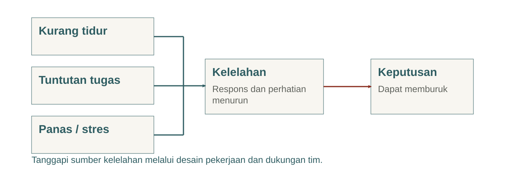
NIOSH · tautan pada catatan
Pendidikan Jasmani & HSE Geofisika · Pertemuan 3
Ritme sirkadian
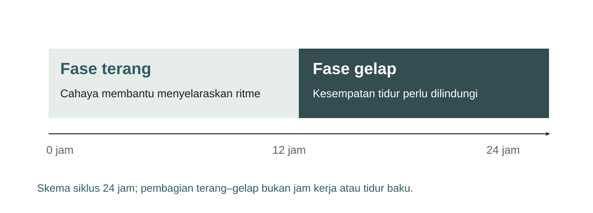
NHLBI · NIOSH · tautan pada catatan
Pendidikan Jasmani & HSE Geofisika · Pertemuan 3
Tahap tidur dalam materi mutakhir
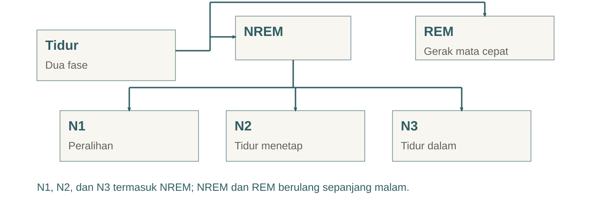
NHLBI · tautan pada catatan
Pendidikan Jasmani & HSE Geofisika · Pertemuan 3
Kebutuhan tidur dewasa
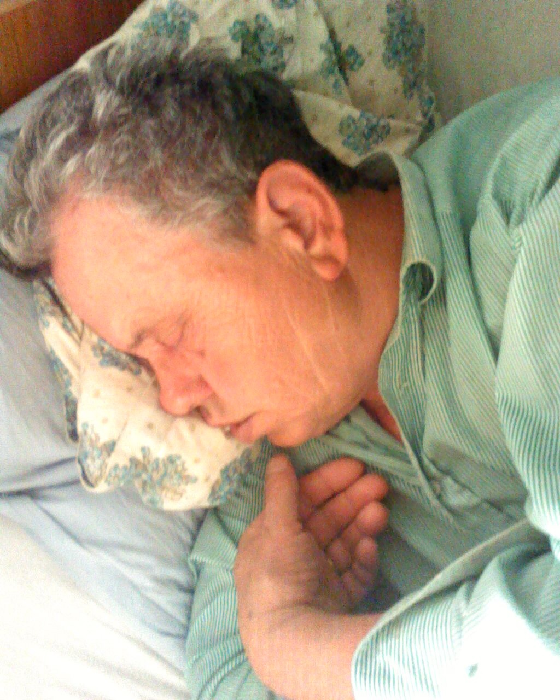
Imogenisla · CC BY-SA 3.0- Usia 18–60 tahun: rekomendasi umum sedikitnya 7 jam per malam.
- Kualitas tidur dan kondisi saat terjaga juga perlu diperhatikan.
- Lima jam bukan target rutin yang memadai.
CDC · tautan pada catatan
Pendidikan Jasmani & HSE Geofisika · Pertemuan 3
Kelelahan pada pekerjaan geofisika
- Salah memasukkan nomor elektroda atau identitas stasiun.
- Melewatkan konfirmasi radio sebelum tahap berbahaya.
- Lengah saat melepas alat atau selama perjalanan pulang.
NIOSH · tautan pada catatan
Pendidikan Jasmani & HSE Geofisika · Pertemuan 3
Laporan kondisi dan tindakan tim
- Mengantuk berat, konsentrasi berulang kali terputus, atau gerak tidak stabil perlu ditanggapi.
- Hentikan tahap yang bergantung pada kewaspadaan tersebut.
- Atur pengganti, pemulihan, atau penundaan dan nilai ulang syarat aman.
NIOSH · tautan pada catatan
Pendidikan Jasmani & HSE Geofisika · Pertemuan 3
Waktu kerja mencakup seluruh perjalanan
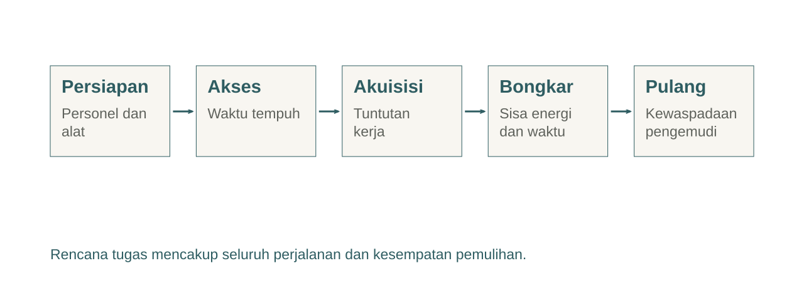
NIOSH · tautan pada catatan
Pendidikan Jasmani & HSE Geofisika · Pertemuan 3
Kerja malam perlu alasan dan dukungan
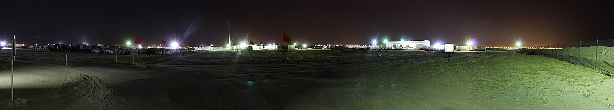
Gyan Bahadur Khattri · CC BY-SA 4.0- Pertimbangkan alternatif waktu atau metode.
- Rencanakan pencahayaan, personel, komunikasi, dan perjalanan pulang.
NIOSH · tautan pada catatan
Pendidikan Jasmani & HSE Geofisika · Pertemuan 3
Panas menambah tuntutan fisiologis
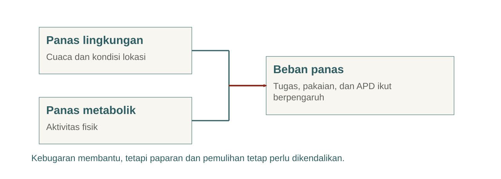
NIOSH · tautan pada catatan
Pendidikan Jasmani & HSE Geofisika · Pertemuan 3
Aklimatisasi berlangsung bertahap
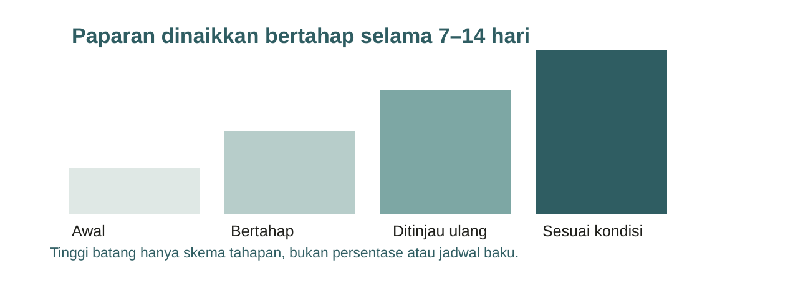
NIOSH · tautan pada catatan
Pendidikan Jasmani & HSE Geofisika · Pertemuan 3
Pemulihan dalam panas
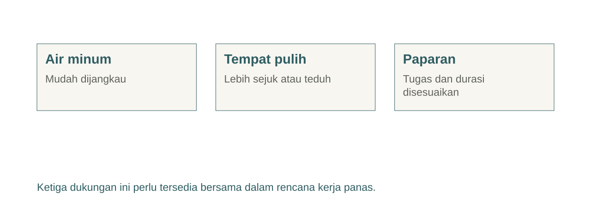
NIOSH · tautan pada catatan
Pendidikan Jasmani & HSE Geofisika · Pertemuan 3
Tanda bahaya saat bekerja dalam panas
- Kebingungan, bicara pelo, kejang, atau hilang kesadaran memerlukan respons darurat.
- Hentikan kerja, aktifkan bantuan medis setempat, dan mulai pendinginan segera bila aman.
- Dampingi korban; jangan berikan minuman bila tidak sadar atau sulit menelan.
NIOSH · tautan pada catatan
Pendidikan Jasmani & HSE Geofisika · Pertemuan 3
Rencana kerja dengan ruang pemulihan
- Tentukan tahap berat, waktu paparan, dan titik istirahat.
- Siapkan personel pengganti serta waktu cadangan.
- Tinjau ulang rencana ketika cuaca, kondisi orang, atau akses berubah.
Pendidikan Jasmani & HSE Geofisika · Pertemuan 3
Bahaya, kejadian, dan akibat
| Bahaya atau kondisi | Kejadian | Akibat |
|---|
| Kabel melintang | Kaki tersangkut | Jatuh dan cedera |
| Energi injeksi listrik | Kontak bagian berbahaya | Sengatan |
| Kelelahan operator | Konfirmasi terlewat | Paparan bahaya tidak terkendali |
OSHA · tautan pada catatan
Pendidikan Jasmani & HSE Geofisika · Pertemuan 3
JSA menghubungkan rencana dengan bukti
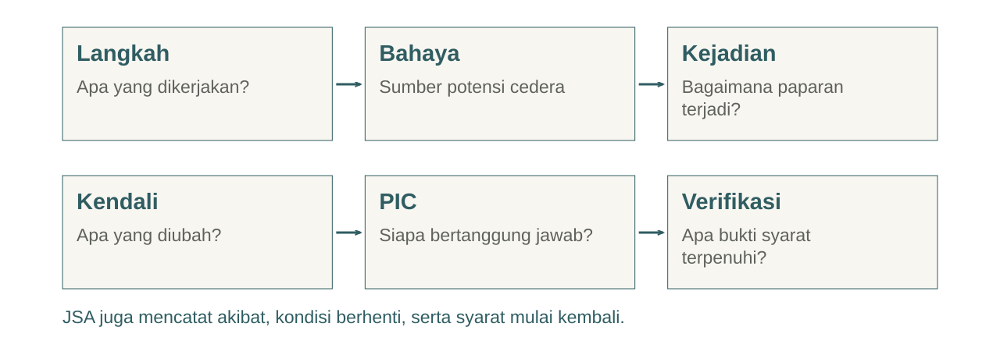
OSHA · tautan pada catatan
Pendidikan Jasmani & HSE Geofisika · Pertemuan 3
Hierarki pengendalian dalam rencana
| Prioritas | Penerapan pada kasus |
|---|
| Eliminasi / substitusi | Ubah titik atau metode bila paparan dapat dikurangi |
| Rekayasa | Alat bantu, pembatas zona, penataan akses |
| Administratif | SOP, komunikasi, peran, dan pemulihan |
| APD | Perlindungan pribadi sesuai bahaya |
OSHA · tautan pada catatan
Pendidikan Jasmani & HSE Geofisika · Pertemuan 3
Contoh JSA: akses dan alat
| Langkah | Kendali | Verifikasi / PIC |
|---|
| Tinjau rute | Pilih akses layak; tunda jika tidak ada | Ketua menunjukkan rute yang diperiksa |
| Siapkan kotak | Periksa berat, isi, dan pegangan | PIC alat mengonfirmasi kondisi |
| Pindahkan alat | Pilih bantuan sesuai medan dan tugas | Tim menyepakati metode dan aba-aba |
OSHA · NIOSH · tautan pada catatan
Pendidikan Jasmani & HSE Geofisika · Pertemuan 3
Contoh JSA: ukur dan pulang
| Langkah | Kendali | Verifikasi / PIC |
|---|
| Siapkan pengukuran | Zona aman dan komunikasi sesuai SOP | Operator menerima seluruh konfirmasi |
| Ubah konfigurasi | Hentikan dan amankan energi sesuai manual | Operator memverifikasi sebelum penanganan |
| Bongkar dan pulang | Evaluasi kelelahan dan transportasi | Ketua memastikan rencana pulang layak |
OSHA · tautan pada catatan
Pendidikan Jasmani & HSE Geofisika · Pertemuan 3
Kondisi berhenti dan mulai kembali
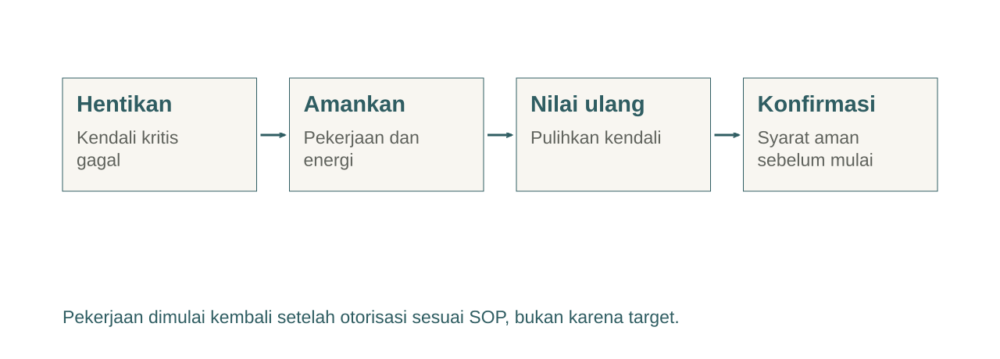
Pendidikan Jasmani & HSE Geofisika · Pertemuan 3
Simulasi kelompok
- Survei geolistrik di perbukitan, lintasan 400 m.
- Berat kotak belum terverifikasi; waktu mulai terlambat.
- Susun JSA 4–6 langkah dari akses sampai perjalanan pulang.
Pendidikan Jasmani & HSE Geofisika · Pertemuan 3
Kartu perubahan kondisi
| Perubahan | Keputusan yang harus dijelaskan |
|---|
| Radio gagal | Tahap mana berhenti dan kapan boleh dimulai? |
| Hujan, akses licin | Siapa menilai ulang akses dan metode angkut? |
| Anggota mengantuk | Bagaimana tugas dan perjalanan pulang diubah? |
| Panas meningkat | Bagaimana paparan dan pemulihan disesuaikan? |
Pendidikan Jasmani & HSE Geofisika · Pertemuan 3
Toolbox talk 60 detik
- Pekerjaan dan bahaya utama.
- Kendali yang telah diperiksa serta pembagian peran.
- Cara konfirmasi, kondisi berhenti, dan cara meminta bantuan.
Pendidikan Jasmani & HSE Geofisika · Pertemuan 3
Exit ticket individu
- Mengapa tidur lima jam tidak dijadikan target rutin?
- Apa kendali dan verifikasi ketika radio gagal?
- Sebut satu kondisi berhenti serta syarat mulai kembali.
Pendidikan Jasmani & HSE Geofisika · Pertemuan 3
Tugas dan asesmen
- Sempurnakan JSA satu halaman dengan PIC dan bukti verifikasi.
- Tambahkan rencana pemulihan serta perjalanan pulang.
- Jelaskan satu keputusan secara langsung pada kelas berikutnya.
Pendidikan Jasmani & HSE Geofisika · Pertemuan 3
Referensi dan acuan lapangan
- CDC dan NHLBI: tidur serta tahap tidur.
- NIOSH: kelelahan, panas, dan aklimatisasi.
- OSHA: JSA dan hierarki pengendalian.
CDC · NHLBI · NIOSH · OSHA · tautan pada catatan